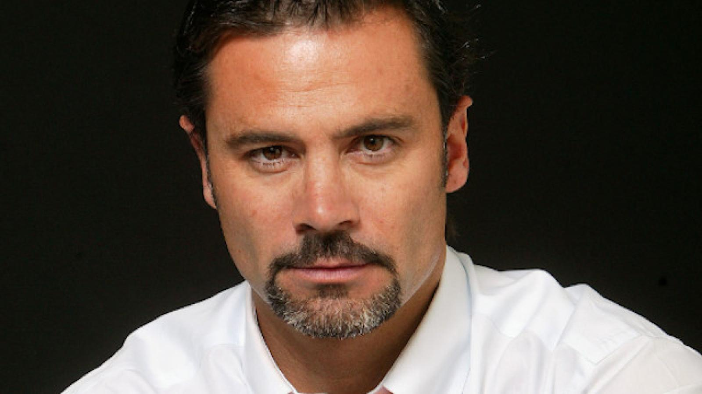

Mi nombre es Miguel Humberto Yáñez Hermosilla. Nací el 4 de agosto de 1945, fruto del amor de mis padres, Héctor José Yáñez González y Elcira del Carmen Hermosilla González.
A lo largo de mi vida, me dediqué con gran pasión y maestría a mi oficio: ser maestro enfierrador. Para mí, no era solo un trabajo, era mi vocación. Mis alicates eran mi extensión, mi herramienta más preciada, y encontrar la perfección en el arte de hacer cadenas para pilares era una de mis grandes satisfacciones.
Fui un hombre que valoraba el trabajo arduo y el esfuerzo. Dediqué mi vida entera a mi labor y, por encima de todo, a mi familia, quienes siempre fueron mi mayor motivación.
No estén tristes por mi partida. Miren al cielo, y sepan que siempre estoy aquí, con ustedes.



Guarden en sus corazones nuestros recuerdos. Vivan sus vidas con alegría y amor, y sepan que nuestro vínculo es eterno y que nos volveremos a encontrar.